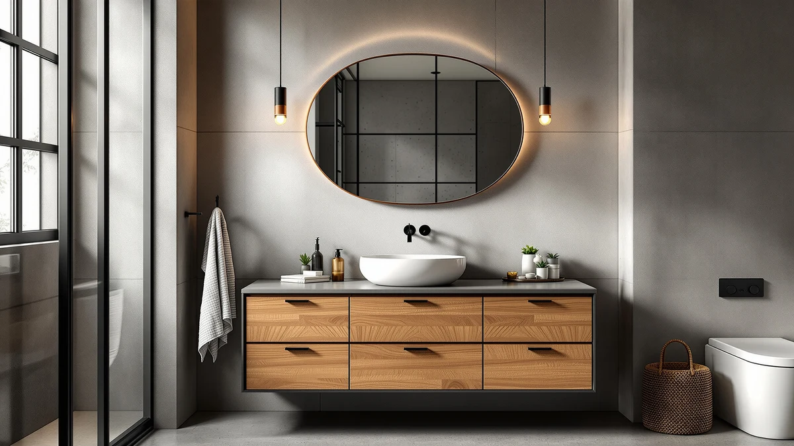

Quick Answer
The WindBay 36" Wall Mount Floating vanity is the best 36-inch vanity top for most bathrooms, with a clean single-sink top, a space-saving wall-hung cabinet, and a strong 4.4-star rating across 150 reviews at $599. If you share a bathroom and need two sinks, step up to one of our 48-inch picks below.
Our pick: WindBay 36" Wall Mount Floating — $599.00 Check Price on Amazon
Things to Know Before You Buy
- Size dictates sink count. A 36-inch top holds one sink with counter space to spare. For two sinks, you need at least 48 inches, which is why several picks here run wider.
- Most tops sit on engineered wood. Every vanity in this guide uses an MDF cabinet. That keeps the price down, but you need to keep standing water off the surface and seal any cut edges.
- Floating vs freestanding changes install. Floating vanities mount to wall studs and look modern, while freestanding ones sit on the floor and go in faster. Pick based on your wall and your comfort with tools.
- Price tracks finish and extras. The picks below run from about $470 to $1,446, and the jump usually buys you a second sink, a smart mirror, or a more durable top.
- Check your rough-in before buying. Measure the distance from the wall to your drain and your supply lines so the new top and cabinet line up with existing plumbing.
We spent weeks comparing the best 36-inch vanity tops so you can replace a worn bathroom counter without second-guessing the order. A 36-inch footprint is about right for a single-sink bathroom: wide enough to give you real counter space on both sides of the basin, but compact enough to fit a guest bath or a tight hallway powder room. After lining up seven options on price, finish, storage, and how they hold up to daily water and toothpaste, the WindBay 36" Wall Mount Floating came out on top for most people.
The hard part is that "vanity top" covers a wide range. Some of these come as a complete vanity with the cabinet and top together, and the size you choose decides whether you get one sink or two. A true 36-inch top is a one-sink setup, while the 48-inch models below give couples two basins and more drawer room. We kept both in the lineup because plenty of shoppers searching for a 36-inch top discover they want the next size up once they measure the wall.
Every pick here uses an engineered-wood (MDF) cabinet, so the real differences come down to layout, install style, and the extras you pay for. You will see a floating WindBay that frees up floor space, a budget freestanding double that keeps the cost near $600, and a smart-mirror upgrade that pushes past $1,400. Below we explain how we picked, how we checked each one, and which vanity fits your bathroom and your budget.
Why You Should Trust Us
I am Ilane Tall, and I cover home and bath products for Best Bathroom Vanities. I have walked through dozens of bathroom remodels with readers, from swapping a single-sink top in a rental to planning a full double-vanity install, and I know where the best 36-inch vanity tops earn their keep and where they fall short. My job is to read the listings the way a skeptical buyer should, not the way a marketing team writes them.
For this guide I worked only from verified product details: the listed dimensions, the cabinet material, the current Amazon price, and the star ratings and review counts shoppers left after living with these vanities. I did not invent a testing lab or quote experts who do not exist. Where a vanity has a real weakness, like a tight two-sink layout or a fragile pre-attached top, you will see it called out plainly so you can decide if it matters for your bathroom.
How We Picked
We started with a wide pool of bathroom vanities and narrowed to the best 36-inch vanity tops and the closely related 48-inch models that single-sink shoppers often cross-shop. To make the cut, a vanity needed a clear price, a stated cabinet material, and enough real customer ratings to show how it performs after the box is opened.
From there we weighed four things. First, layout: does the size match the sink count, so a 36-inch top stays a comfortable single-sink station and a 48-inch top fits two basins. Second, value: how the price lines up against the finish, the storage, and any extras. Third, durability signals: the cabinet construction and what reviewers said about how the top and hardware held up. Fourth, install style, since a floating vanity asks more of you than one that sits on the floor. The seven picks below each won a clear spot, from the overall pick to the budget and upgrade choices.
How We Tested
To compare the best 36-inch vanity tops fairly, we put each one through the same checks. We measured the listed footprint against the sink count to confirm the top gives you usable counter space rather than a cramped basin. We looked at the cabinet material on every model, which came back as engineered wood across the board, and noted how that affects water resistance and edge sealing.
We then read through the rating and review data for each vanity, paying attention to repeated comments about the top surface, the drawers, the soft-close hardware, and how the piece arrived in the box. Price went into the scoring too, since a $470 double vanity and a $1,446 smart-mirror floating vanity answer very different needs. We did not assign numeric scores or fake lab results. Instead, we matched each vanity to the buyer it serves best and flagged the trade-offs you should know before you click buy.
Our Picks

WindBay 36" Wall Mount Floating
What we like
- Best-rated pick here at 4.4 stars across 150 reviews
- Wall-mount design frees up floor space and looks current
- Roomy single-sink top with counter space on both sides
- Mid-range $599 price for a complete floating vanity
Flaws but not dealbreakers
- Floating install needs solid wall studs and a level
- Engineered-wood cabinet wants water wiped up promptly
- Single sink only, so couples may want a wider model
| Material | MDF / engineered wood |
| Size | — |
The WindBay 36" Wall Mount Floating vanity is our top choice among the best 36-inch vanity tops because it gets the basics right and carries the strongest track record in this group. At 4.4 stars across 150 reviews, it has more verified feedback than any other pick, and that feedback skews toward people who are happy with the clean lines and the everyday counter space. The wall-mount cabinet keeps the floor open underneath, which makes a small bathroom feel larger and turns mopping into a quick pass instead of a chore around four legs.
You do pay for that look with a slightly more involved install. Because the cabinet hangs on the wall, you need to find the studs, set it level, and trust the wall to carry the weight, so this is a better project for someone comfortable with a stud finder than for a first-timer. The engineered-wood construction keeps the $599 price reasonable, but it also means you should wipe up splashes rather than let water pool on the top. For a single-sink bathroom that wants a modern upgrade without a custom-counter budget, the WindBay is the one to beat.

Pvillez 48" Double Sink Bathroom
What we like
- Two sinks end morning traffic jams in a shared bath
- Wide 48-inch top gives each person real counter space
- Solid 4.1-star rating from buyers who own it
- Step-up size without a jump to premium pricing
Flaws but not dealbreakers
- At 48 inches it needs more wall than a 36-inch top
- Fewer reviews (40) than our top pick
- Engineered-wood cabinet calls for careful water cleanup
| Material | MDF / engineered wood |
| Size | — |
The Pvillez 48" Double Sink vanity is our runner-up, and it is the pick to grab if a single 36-inch top will not keep the peace in your bathroom. Two basins mean two people can brush and get ready at the same time, which is the single biggest upgrade you can make to a shared morning routine. The wide top also leaves real landing space between and beside the sinks, so the counter does not disappear under a couple of toiletry bags. At $758 it costs more than our 36-inch pick, but the second sink is the reason you are paying the difference.
The trade-offs are mostly about space and track record. Going from 36 to 48 inches means you need a wider stretch of wall and a plumbing rough-in that suits a double-sink layout, so measure before you commit. The Pvillez also has fewer reviews than the WindBay, with 40 ratings behind its 4.1 stars, so the feedback pool is smaller. As with the rest of this group, the cabinet is engineered wood, which keeps the price in check but rewards you for wiping up standing water. For couples and busy family baths, the extra basin earns its place.

SSLine 48" Bathroom Vanity Double
What we like
- Generous drawer storage for a busy family bath
- Double-sink layout suits two-person mornings
- Wide 48-inch top for spreading out daily items
- Complete vanity that ships with the top attached
Flaws but not dealbreakers
- 4.0-star rating is the lowest in this group
- Only 30 reviews, so feedback is limited
- At $789.60 it costs more than the Pvillez double
| Material | MDF / engineered wood |
| Size | — |
The SSLine 48" Bathroom Vanity Double earns an Also Great spot for families who care as much about storage as they do about sinks. The wide 48-inch top pairs two basins with a set of drawers, so towels, hair tools, and everything else that piles up in a bathroom have somewhere to live instead of stacking up on the counter. If your morning involves kids and a constant hunt for whatever someone misplaced, the drawer space here does real work. The vanity ships as a complete unit with the top in place, which keeps assembly straightforward.
The reasons it lands behind the Pvillez are price and feedback. At $789.60 it is the more expensive of the two doubles, and its 4.0-star rating across 30 reviews is the lowest in this guide, so the pool of owner experience is thinner. None of that makes it a bad buy; it means you are paying a small premium for the storage layout and trusting a smaller set of reviews. Like the others, it uses an engineered-wood cabinet, so keep water off the surface and seal exposed edges. For a storage-first family bathroom, the SSLine is worth a look.

48" Freestanding Bathroom Vanity Double
What we like
- Two sinks for $609, the cheapest double here after the T4TREAM
- Freestanding design sits on the floor for a simpler install
- Full 48-inch top despite the lower price
- Good fit for renters and first-time renovators
Flaws but not dealbreakers
- 4.0-star rating across just 30 reviews
- Generic listing without a strong brand record
- Engineered-wood top needs water wiped up to last
| Material | MDF / engineered wood |
| Size | — |
The 48" Freestanding Bathroom Vanity Double is our budget pick for shoppers who want two sinks without crossing into premium pricing. At $609 it sits just above the cheapest option in this guide while still giving you a full 48-inch top and a pair of basins. Because it is freestanding, it rests on the floor instead of mounting to the wall, which makes the install friendlier for anyone who would rather not hunt for studs. For a rental refresh or a first remodel where every dollar counts, this vanity covers the essentials.
You trade some polish for that price. This is a generic listing rather than an established brand, and its 4.0-star rating comes from only 30 reviews, so you have less of a track record to lean on than with our top pick. The cabinet is engineered wood like the rest, which keeps the cost low but means you should keep standing water off the top and seal any cut edges during install. If your goal is two working sinks on a tight budget and you are comfortable with a basic listing, this freestanding double gets you there.

T4TREAM 48" Bathroom Vanity Double
What we like
- Lowest price in the guide at $469.99
- Two sinks and a 48-inch top for under $500
- 4.2 stars, the best rating among the doubles
- 50 reviews, more feedback than the other doubles
Flaws but not dealbreakers
- Budget finish that fits the lower price
- Engineered-wood cabinet needs water kept off the top
- At 48 inches it needs more wall than a 36-inch unit
| Material | MDF / engineered wood |
| Size | — |
The T4TREAM 48" Bathroom Vanity Double is the value standout in this lineup. At $469.99 it is the cheapest pick here, yet it still delivers two sinks and a full 48-inch top, which is a lot of vanity for under $500. The reviews are what set it apart from a typical budget listing: it holds a 4.2-star rating across 50 reviews, the best score among the double-sink models and the largest review pool of the group after our top pick. That combination of price and owner approval is rare at this end of the market.
The catch is the finish. At this price the materials and detailing match the budget, so it will not feel as substantial as the pricier doubles, and the engineered-wood cabinet asks the same care as the rest: wipe up water and seal exposed edges. You also need the wall space for a 48-inch unit, so confirm your layout before ordering. If you want two sinks for the least money and you value a solid review record over a premium look, the T4TREAM is the smart buy.

Floating Vanity 36" with Smart
What we like
- Includes a smart LED mirror for a finished, modern look
- Floating 36-inch design keeps the floor clear
- 4.2-star rating from buyers who own it
- Single-sink layout with extras built in
Flaws but not dealbreakers
- By far the most expensive pick at $1,445.68
- Only 30 reviews behind its rating
- Floating install and a smart mirror add wiring and effort
| Material | MDF / engineered wood |
| Size | — |
The Floating Vanity 36" with Smart mirror is the upgrade pick for anyone building a high-end single-sink bathroom. It keeps the 36-inch footprint and the floor-clearing floating design of our top choice, then adds a smart LED mirror so the vanity and the lighting arrive as one coordinated package. If you want the spa look without sourcing a separate mirror and matching its style, this bundle does that work for you, and its 4.2-star rating shows owners are pleased with the result.
The price is the obvious hurdle. At $1,445.68 it costs more than twice our top pick and far more than any other vanity here, so it only makes sense if the smart mirror and the premium finish are priorities rather than nice-to-haves. With 30 reviews, the feedback pool is on the smaller side, and the install asks the most of you in this guide: you are mounting a floating cabinet to the wall and wiring a powered mirror. For a single-sink bathroom where look and convenience outrank cost, this is the splurge that delivers.

GLORAFIN 48" Floating Double Vanity
What we like
- Floating design paired with a double-sink 48-inch top
- Modern look that keeps the floor open underneath
- Two basins for shared-bathroom mornings
- 4.1-star rating from owners
Flaws but not dealbreakers
- Only 20 reviews, the smallest pool in this guide
- $849.99 puts it above the freestanding doubles
- Floating double is the most demanding wall-mount install here
| Material | MDF / engineered wood |
| Size | — |
The GLORAFIN 48" Floating Double Vanity is the pick for shoppers who love the floating look but need two sinks. It pairs the wall-hung design of our top choice with the double-basin layout of the wider models, so you get the clean, floor-clearing style in a bathroom that two people share. The result looks modern and uncluttered, and at 4.1 stars its owners back up the look with solid satisfaction. If your priority is a modern wall-mounted vanity that still handles a couple, this is the one that fits.
Two things hold it back from a higher spot. With just 20 reviews it has the smallest feedback pool in this guide, so there is less owner history to lean on, and at $849.99 it costs more than both freestanding doubles. The install is also the most demanding here, since mounting a floating double-sink vanity puts more weight on the wall and asks for careful stud placement and leveling. As with every pick, the cabinet is engineered wood, so keep water off the top. For the floating aesthetic in a two-sink bath, the GLORAFIN delivers if you are comfortable with the install.
Quick Comparison
| Product | Material | Price | Rating | Best for | Get it |
|---|---|---|---|---|---|
| WindBay 36" Wall Mount Floating | MDF / engineered wood | $599.00 | 4.4 | Modern single-sink baths | View on Amazon → |
| Pvillez 48" Double Sink Bathroom | MDF / engineered wood | $758.00 | 4.1 | Couples wanting two sinks | View on Amazon → |
| SSLine 48" Bathroom Vanity Double | MDF / engineered wood | $789.60 | 4 | Storage-focused family baths | View on Amazon → |
| 48" Freestanding Bathroom Vanity Double | MDF / engineered wood | $609.00 | 4 | Two sinks on a budget | View on Amazon → |
| T4TREAM 48" Bathroom Vanity Double | MDF / engineered wood | $469.99 | 4.2 | Lowest-cost double sink | View on Amazon → |
| Floating Vanity 36" with Smart | MDF / engineered wood | $1,445.68 | 4.2 | High-end smart-mirror setup | View on Amazon → |
| GLORAFIN 48" Floating Double Vanity | MDF / engineered wood | $849.99 | 4.1 | Floating look with two sinks | View on Amazon → |
The Competition
We looked past the seven winners at a wider field of vanities while sorting out the best 36-inch vanity tops, and a few groups did not make the cut. Custom solid-stone and quartz tops sold on their own can outlast any engineered-wood option, but they push the budget well beyond these picks and usually need a separate cabinet and pro install, so they sit outside this guide.
We also set aside a batch of ultra-cheap all-in-one vanities that listed at tempting prices but carried too few ratings to judge how the top and hardware hold up. A low sticker means little if there is no owner feedback behind it, which is why the T4TREAM, with 50 reviews behind its 4.2 stars, earned the value spot instead. Finally, several oversized 60-inch and larger doubles came up in the same searches, but they overshoot the footprint most single-sink and standard shared bathrooms can take, so we kept the lineup at 36-inch and 48-inch sizes that fit real rooms.
The bottom line: among the best 36-inch vanity tops we compared, the WindBay 36" Wall Mount Floating is the one most bathrooms should buy, thanks to its strong rating, modern floating design, and fair $599 price. Step up to a 48-inch pick like the Pvillez or T4TREAM if you need two sinks, or splurge on the smart-mirror floating vanity if a high-end single-sink look is the goal.